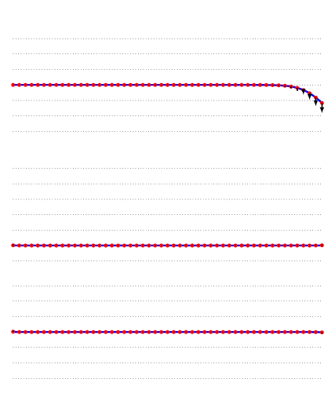
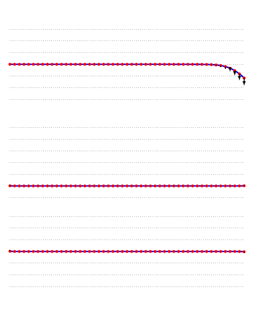

| Reflexão: extremidade livre (acima) e fixa (abaixo)  |
| Propagação longitudinal (mola - acima) e transversal (corda - abaixo) |
| Superposição  |
| Reflexão: extremidade livre (acima) e fixa (abaixo) |
| Propagação longitudinal (mola - acima) e transversal (corda - abaixo) |
| Superposição  |